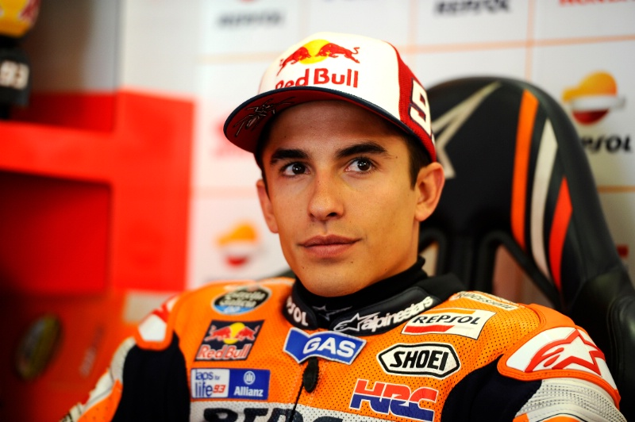
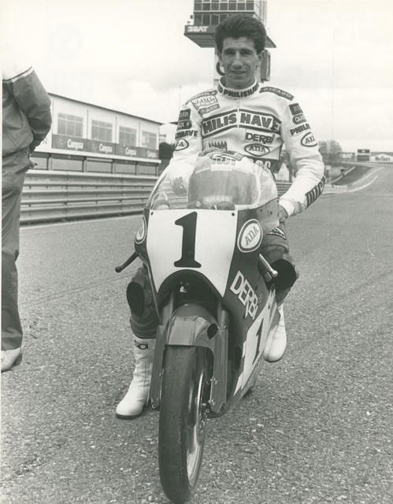
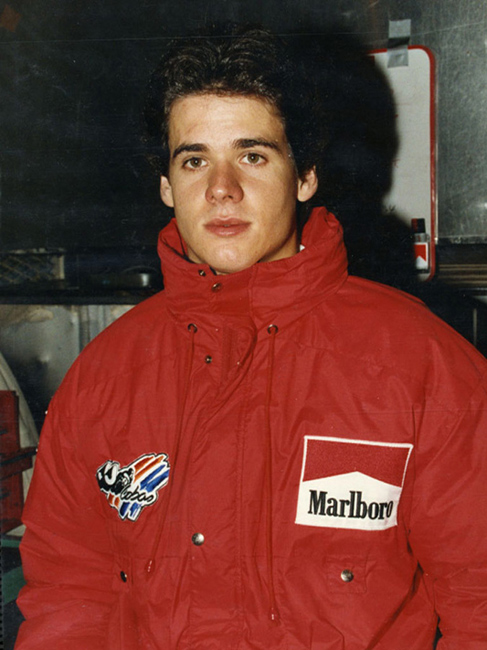
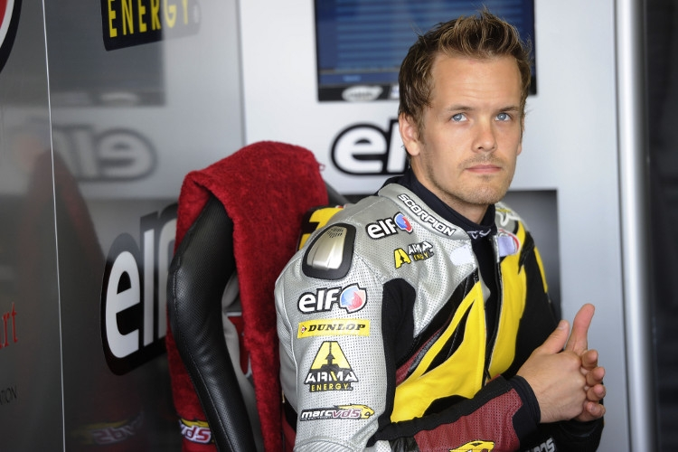
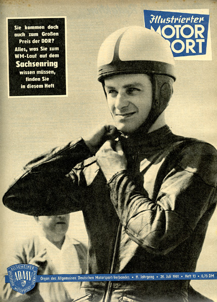
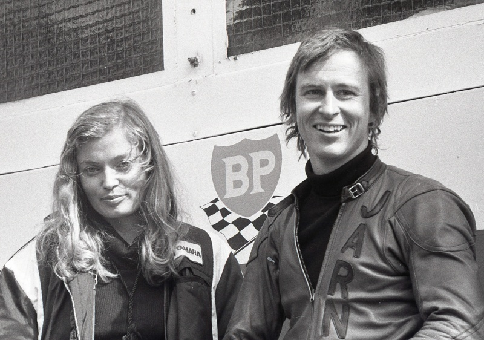
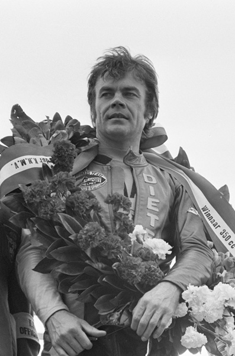
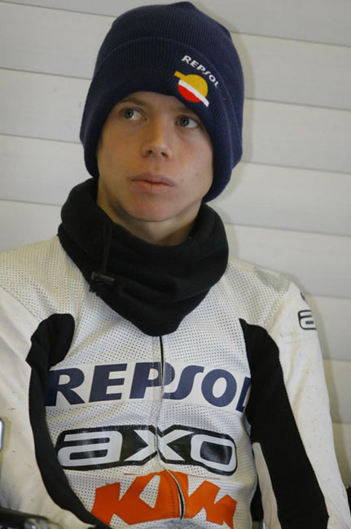
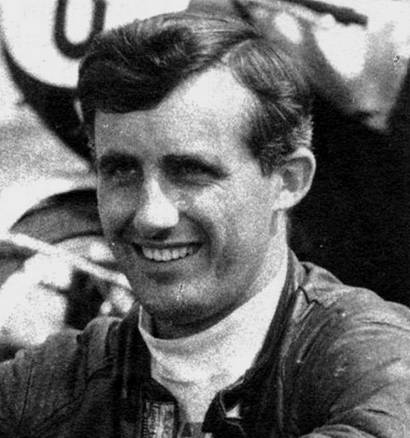
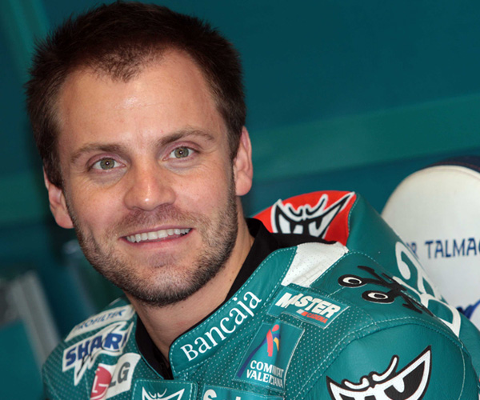

Campeonato del Mundo de Motociclismo
En esta lista encontrarás todos los podios totales* y victorias* desde 1949 hasta hoy, de las categorías de 50cc, 80cc, 125cc, 250cc, 350cc, 500cc, Moto2, Moto3 y Motogp. *Podios totales es igual a los triunfos conseguidos en los tres escalones. *Victorias es igual a los triunfos conseguidos en el primer escalón. Entre paréntesis, número de victorias. Actualizado el día 25 de Agosto de 2020. Última carrera Austria - STYRIA-20
| Pos | Piloto | Imagen | País | Victorias | Podios totales | Motogp | Moto2 | Moto3 | 250cc | 125cc | 350cc | 80cc | 50cc | Campeonatos mundiales |
|---|---|---|---|---|---|---|---|---|---|---|---|---|---|---|
| 1 | Giacomo AGOSTINI |  |
ITA | 122 | 159 | 88 (68) | 71 (54) | 15 (1966/67/68/69/70/71/72/75 - 500CC) (1968/69/70/71/72/73/74 - 350CC) |
||||||
| 2 | Valentino ROSSI |  |
ITA | 115 | 235 | 199 (89) | 21 (14) | 15 (12) | 9 (1997 - 125CC) (1999 - 250CC) (2001 - 500CC) (2002/03/04/05/08/09 - Motogp) |
|||||
| 3 | Angel NIETO |  |
SPA | 90 | 139 | 85 (62) | 2 (1) | 52 (27) | 13
(1969/70/72/75/76/77 - 50CC) (1971/72/79/81/82/83/84 - 125CC) |
|||||
| 4 | Marc MARQUEZ |  | SPA | 82 | 134 | 95 (56) | 25 (16) | 14 (10) | 8 (2010 - 125CC) (2012 - Moto2) (2013/14/16/17/18/19 - Motogp) |
|||||
| 5 | Mike HAILWOOD | GBR | 76 | 112 | 48 (37) | 32 (21) | 6 (2) | 26 (16) | 9
(1961/66/67 - 250CC) (1966/67 - 350CC) (1962/63/64/65 - 500CC) |
|||||
| 6 | Jorge LORENZO |  |
SPA | 68 | 152 | 114 (47) | 29 (17) | 9 (4) | 5
(2006/07 - 250CC) (2010/12/15 - Motogp) |
|||||
| 7 | Dani PEDROSA |  |
SPA | 54 | 153 | 112 (31) | 24 (15) | 17 (8) | 3 (2003 - 125CC) (2004/05 - 250CC) |
|||||
| 8 | Mick DOOHAN |  |
AUS | 54 | 95 | 95 (54) | 5
(1994/95/96/97/98 - 500CC) |
|||||||
| 9 | Phil READ | GBR | 52 | 98 | 34 (11) | 27 (27) | 21 (10) | 16 (4) | 7
(1968 - 125CC) (1964/65/68/71 - 250CC) (1973/74 - 500CC) |
|||||
| 10 | Jim REDMAN |  |
RHO | 45 | 98 | 2 (2) | 46 (18) | 24 (4) | 26 (21) | 6
(1962/63 - 250CC) (1962/63/64/65 - 350CC) |
||||
| Pos | Piloto | Imagen | País | Victorias | Podios totales | Motogp | Moto2 | Moto3 | 250cc | 125cc | 350cc | 80cc | 50cc | Campeonatos mundiales |
| 11 | Casey STONER |  |
AUS | 45 | 89 | 69 (38) | 10 (5) | 10 (2) | 2
(2007/11 - Motogp) |
|||||
| 12 | Max BIAGGI |  |
ITA | 42 | 111 | 58 (13) | 53 (29) | 4
(1994/95/96/97 - 250CC) |
||||||
| 13 | Anton MANG |  |
GER | 42 | 84 | 60 (33) | 4 (1) | 20 (8) | 5
(1980/81/87 - 250CC) (1981/82 - 350CC) |
|||||
| 14 | Carlo UBBIALI |  |
ITA | 39 | 68 | 21 (13) | 47 (26) | 9
(1951/55/56/58/59/60 - 125CC) (1956/59/60 - 250CC) |
||||||
| 15 | John SURTEES | GBR | 38 | 45 | 24 (22) | 1 (1) | 20 (15) | 7
(1958/59/60 - 350CC) (1956/58/59/60 - 500CC) |
||||||
| 16 | Jorge MARTINEZ |  | SPA | 37 | 61 | 26 (15) | 34 (22) | 1 | 4
(1986/87/88 - 80CC) (1988 - 125CC) |
|||||
| 17 | Luca CADALORA |  |
ITA | 34 | 72 | 24 (8) | 39 (22) | 9 (4) | 3
(1986 - 125CC) (1991/92 - 250CC) |
|||||
| 18 | Geoff DUKE |  |
GBR | 33 | 50 | 32 (22) | 1 | 17 (11) | 6
(1951/52 - 350CC) (1951/53/54/55 - 500CC) |
|||||
| 19 | Eddie LAWSON |  |
USA | 31 | 78 | 78 (31) | 4
(1984/86/88/89 - 500CC) |
|||||||
| 20 | Kork BALLINGTON |  |
RSA | 31 | 46 | 2 | 26 (17) | 18 (14) | 4
(1978/79 - 250CC) (1978/79 - 350CC) |
|||||
| Pos | Piloto | Imagen | País | Victorias | Podios totales | Motogp | Moto2 | Moto3 | 250cc | 125cc | 350cc | 80cc | 50cc | Campeonatos mundiales |
| 21 | Luigi TAVERI |  |
SWI | 30 | 89 | 13 (2) | 56 (22) | 3 | 17 (6) | 3
(1962/64/66 - 125CC) |
||||
| 22 | Loris CAPIROSSI | ITA | 29 | 99 | 42 (9) | 37 (12) | 20 (8) | 3
(1990/91 - 125CC) (1998 - 250CC) |
||||||
| 23 | Eugenio LAZZARINI | ITA | 27 | 81 | 40 (9) | 41 (18) | 3 (1979/80 - 50CC) (1978 - 125CC) |
|||||||
| 24 | Pierpaolo BIANCHI |  |
ITA | 27 | 61 | 56 (24) | 5 (3) | 3 (1976/77/80 - 125CC) |
||||||
| 25 | Freddie SPENCER |  |
USA | 27 | 39 | 31 (20) | 8 (7) | 3
(1985 - 250CC) (1983/85 - 500CC) |
||||||
| 26 | Kevin SCHWANTZ |  |
USA | 25 | 51 | 51 (25) | 1 (1993 - 500CC) |
|||||||
| 27 | Hugh ANDERSON |  |
NZE | 25 | 48 | 22 (17) | 1 | 25 (8) | 4 (1963/64 - 50CC) (1963/65 - 125CC) |
|||||
| 28 | Andrea DOVIZIOSO |  |
ITA | 24 | 103 | 62(15) | 26 (4) | 15 (5) | 1 (2004 - 125CC) |
|||||
| 29 | Wayne RAINEY |  |
USA | 24 | 65 | 64 (24) | 1 | 3 (1990/91/92 - 500CC) |
||||||
| 30 | Kenny ROBERTS |  |
USA | 24 | 44 | 39 (22) | 5 (2) | 3 (1978/79/80 - 500CC) |
||||||
| Pos | Piloto | Imagen | País | Victorias | Podios totales | Motogp | Moto2 | Moto3 | 250cc | 125cc | 350cc | 80cc | 50cc | Campeonatos mundiales |
| 31 | Walter VILLA |  |
ITA | 24 | 36 | 25 (20) | 1 | 10 (4) | 4 (1974/75/76 - 250CC) (1976 - 350CC) |
|||||
| 32 | Maverick Viñales |  |
SPA | 23 | 65 | 25 (7) | 9 (4) | 22 (8) | 9 (4) | 1 (2013 - Moto3) |
||||
| 33 | Barry SHEENE |  |
GBR | 23 | 52 | 40 (19) | 1 | 10 (3) | 1 (1) | 2
(1976/77 - 500CC) |
||||
| 34 | Marco MELANDRI |  |
ITA | 22 | 62 | 20 ( 5) | 25 (10) | 17 (7) | 1
(2002 - 250CC) |
|||||
| 35 | Fausto GRESINI |  |
ITA | 21 | 47 | 47 (21) | 2 (1985/87 - 125CC) |
|||||||
| 36 | Bill IVY |  |
GBR | 21 | 42 | 17 (7) | 22 (14) | 3 | 1 (1967 - 125CC) |
|||||
| 37 | Alex CRIVILLE |  | SPA | 20 | 66 | 51 (15) | 9 (5) | 6 | 2
(1989 - 125CC) (1999 - 500CC) |
|||||
| 38 | Ralf WALDMANN |  |
GER | 20 | 50 | 35 (14) | 15 (6) | |||||||
| 39 | Tarquinio PROVINI |  |
ITA | 20 | 39 | 21 (14) | 16 (6) | 2 | 2 (1957 - 125CC) (1958 - 250CC) |
|||||
| 40 | Carlos LAVADO |  |
VEN | 19 | 42 | 36 (17) | 6 (2) | 2 (1983/86 - 250CC) |
||||||
| Pos | Piloto | Imagen | País | Victorias | Podios totales | Motogp | Moto2 | Moto3 | 250cc | 125cc | 350cc | 80cc | 50cc | Campeonatos mundiales |
| 41 | Ricardo TORMO |  |
SPA | 19 | 36 | 11 (4) | 25 (15) | 2 (1978/81 - 50CC) |
||||||
| 42 | Gary HOCKING |  |
RHO | 19 | 33 | 11 (8) | 7 (5) | 4 | 11 (6) | 2 (1961 - 350CC) (1961 - 500CC) |
||||
| 43 | Stefan DÖRFLINGER |  |
SWI | 18 | 58 | 2 | 29 (9) | 27 (9) | 4 (1982/83 - 50CC) (1984/85 - 80CC) |
|||||
| 44 | Kent ANDERSSON |  |
SWE | 18 | 53 | 16 (4) | 32 (14) | 4 | 1 | 2 (1973/74 - 125CC) |
||||
| 45 | Wayne GARDNER |  |
AUS | 18 | 52 | 52 (18) | 1
(1987 - 500CC) |
|||||||
| 46 | Thomas LUTHI |  |
SWI | 17 | 65 | 53 (12) | 2 | 10 (5) | 1 (2005 - 125CC) |
|||||
| 47 | Tetsuya HARADA | JPN | 17 | 55 | 2 | 53 (17) | 1 (1993 - 250CC) |
|||||||
| 48 | Toni ELIAS |  |
SPA | 17 | 43 | 6 ( 1) | 8 (7) | 20 (7) | 9 (2) | 1
(2010 - Moto2) |
||||
| 49 | Daijiro KATO |  |
JPN | 17 | 27 | 2 | 25 (17) | 1
(2001 - 250CC) |
||||||
| 50 | Alvaro BAUTISTA |  |
SPA | 16 | 49 | 3 | 28 (8) | 18 (8) | 1 (2006 - 125CC) |
|||||
| Pos | Piloto | Imagen | País | Victorias | Podios totales | Motogp | Moto2 | Moto3 | 250cc | 125cc | 350cc | 80cc | 50cc | Campeonatos mundiales |
| 51 | Mika KALLIO |  | FIN | 16 | 49 | 16 (4) | 10 (5) | 23 (7) | ||||||
| 52 | Johann ZARCO |  |
FRA | 16 | 48 | 7 | 30 (15) | 11 (1) | 2 (2015/16 - Moto2) |
|||||
| 53 | Nicolas TEROL |  |
SPA | 16 | 39 | 5 (3) | 34 (13) | 1
(2011 - 125CC) |
||||||
| 54 | Brad BINDER |  |
RSA | 16 | 36 | 1 (1) | 15 (8) | 20 (7) | 1 (2016 - Moto3) |
|||||
| 55 | Pol ESPARGARO |  |
SPA | 15 | 46 | 2 | 23 (10) | 21 (5) | 1
(2013 - Moto2) |
|||||
| 56 | Sito PONS |  |
SPA | 15 | 41 | 41 (15) | 2
(1988/89 - 250CC) |
|||||||
| 57 | Ernst DEGNER |  | GER | 15 | 38 | 3 | 20 (8) | 15 (7) | 1
(1962 - 50CC) |
|||||
| 58 | Jarno SAARINEN |  | FIN | 15 | 32 | 2 (2) | 18 (8) | 11 (5) | 1 | 1
(1972 - 250CC) |
||||
| 59 | Dieter BRAUN |  | GER | 14 | 49 | 1 | 21 (7) | 14 (6) | 13 (1) | 2
(1970 - 125CC) (1973 - 250CC) |
||||
| 60 | Alex RINS |  |
SPA | 14 | 48 | 7(2) | 17 (4) | 23 (8) | ||||||
| Pos | Piloto | Imagen | País | Victorias | Podios totales | Motogp | Moto2 | Moto3 | 250cc | 125cc | 350cc | 80cc | 50cc | Campeonatos mundiales |
| 61 | Hans-Georg ANSCHEIDT | GER | 14 | 34 | 4 | 30 (14) | 3
(1966/67/68 - 50CC) |
|||||||
| 62 | Marco SIMONCELLI |  |
ITA | 14 | 31 | 2 | 22 (12) | 7 (2) | 1
(2008 - 250CC) |
|||||
| 63 | Jan DE VRIES |  |
NED | 14 | 27 | 27 (14) | 2 (1971/73 - 50CC) |
|||||||
| 64 | Johnny CECOTTO | VEN | 14 | 26 | 8 (3) | 4 (2) | 14 (9) | 1
(1975 - 350CC) |
||||||
| 65 | Dirk RAUDIES |  |
GER | 14 | 23 | 23 (14) | 1
(1993 - 125CC) |
|||||||
| 66 | Randy MAMOLA | USA | 13 | 57 | 54 (13) | 3 | ||||||||
| 67 | Noboru UEDA | JPN | 13 | 39 | 39 (13) | |||||||||
| 68 | Esteve RABAT |  | SPA | 13 | 36 | 33 (13) | 3 | 1 (2014 - Moto2) |
||||||
| 69 | Andrea IANNONE |  |
ITA | 13 | 35 | 11 (1) | 19 (8) | 5 (4) | ||||||
| 70 | John KOCINSKI |  |
USA | 13 | 35 | 19 (4) | 16 (9) | 1 (1990 - 250CC) |
||||||
| Pos | Piloto | Imagen | País | Victorias | Podios totales | Motogp | Moto2 | Moto3 | 250cc | 125cc | 350cc | 80cc | 50cc | Campeonatos mundiales |
| 71 | Miguel OLIVEIRA |  |
POR | 13 | 35 | 1 (1) | 21 (6) | 13 (6) | ||||||
| 72 | Alex MARQUEZ |  |
SPA | 12 | 38 | 23 (8) | 15 (4) | 2 (2014 - Moto3) (2019 - Moto2) |
||||||
| 73 | Manuel POGGIALI |  |
RSM | 12 | 35 | 13 (5) | 22 (7) | 2
(2001 - 125CC) (2003 - 250CC) |
||||||
| 74 | Mattia PASINI |  |
ITA | 12 | 30 | 2 (2) | 6 (2) | 23 (8) | ||||||
| 75 | Fergus ANDERSON |  |
GBR | 12 | 24 | 3 (2) | 11 (3) | 10 (7) | 2
(1953/54 - 350CC) |
|||||
| 76 | Kazuto SAKATA |  |
JPN | 11 | 41 | 41 (11) | 2
(1994/98 - 125CC) |
|||||||
| 77 | Takazumi KATAYAMA |  |
JPN | 11 | 35 | 8 (1) | 13 (3) | 14 (7) | 1
(1977 - 350CC) |
|||||
| 78 | Romano FENATI |  |
ITA | 11 | 24 | 23 (11) | ||||||||
| 79 | Dave SIMMONDS |  | GBR | 11 | 22 | 5 (1) | 17 (10) | 1 (1969 - 125CC) |
||||||
| 80 | Youichi UI | JPN | 11 | 22 | 22 (11) | |||||||||
| Pos | Piloto | Imagen | País | Victorias | Podios totales | Motogp | Moto2 | Moto3 | 250cc | 125cc | 350cc | 80cc | 50cc | Campeonatos mundiales |
| 81 | Joan MIR |  |
SPA | 11 | 21 | 1 | 4 | 16 (11) | 1 (2017 - Moto3) |
|||||
| 82 | Werner HAAS |  |
GER | 11 | 18 | 11 (7) | 7 (4) | 3
(1953 - 125CC) (1953/54 - 250CC) |
||||||
| 83 | Ralph BRYANS |  |
IRL | 10 | 40 | 12 (2) | 11 | 3 (1) | 14 (7) | 1
(1965 - 50CC) |
||||
| 84 | Rodney GOULD |  |
GBR | 10 | 34 | 4 | 25 (10) | 5 | 1 (1970 - 250CC) |
|||||
| 85 | Hector BARBERA |  |
SPA | 10 | 32 | 20 (4) | 12 (6) | |||||||
| 86 | Greg HANSFORD | AUS | 10 | 25 | 15 (4) | 10 (6) | ||||||||
| 87 | Francesco BAGNAIA |  |
ITA | 10 | 23 | 16 (8) | 7 (2) | 1 (Moto2 - 2018) |
||||||
| 88 | Masao AZUMA | JPN | 10 | 20 | 20 (10) | |||||||||
| 89 | Ezio GIANOLA | ITA | 9 | 30 | 30 (9) | |||||||||
| 90 | Sete GIBERNAU |  |
SPA | 9 | 30 | 30 ( 9) | ||||||||
| Pos | Piloto | Imagen | País | Victorias | Podios totales | Motogp | Moto2 | Moto3 | 250cc | 125cc | 350cc | 80cc | 50cc | Campeonatos mundiales |
| 91 | Hiroshi AOYAMA |  |
JPN | 9 | 27 | 27 (9) | 1 (2009 - 250CC) |
|||||||
| 92 | Gabor TALMACSI |  | HUN | 9 | 26 | 1 | 25 (9) | 1 (2007 - 125CC) |
||||||
| 93 | Jorge MARTIN |  |
SPA | 9 | 25 | 5 (1) | 20 (8) | 1 (Moto3 - 2018) |
||||||
| 94 | Luis SALOM |  |
SPA | 9 | 25 | 3 | 20 (9) | 2 | ||||||
| 95 | Roberto LOCATELLI |  |
ITA | 9 | 25 | 6 | 19 (9) | 1 (2000 - 125CC) |
||||||
| 96 | Hans SPAAN |  |
NED | 9 | 21 | 16 (9) | 4 | 1 | ||||||
| 97 | Haruchika AOKI |  |
JPN | 9 | 20 | 1 | 19 (9) | 2 (1995/96 - 125CC) |
||||||
| 98 | Bill LOMAS |  |
GBR | 9 | 16 | 2 (1) | 1(1) | 1 | 12 (7) | 2
(1955/56 - 350CC) |
||||
| 99 | Loris REGGIANI | ITA | 8 | 41 | 1 | 29 (5) | 11 (3) | |||||||
| 100 | Tevo LANSIVUORI | FIN | 8 | 27 | 11 (1) | 5 (2) | 11 (5) | |||||||
| Pos | Piloto | Imagen | País | Victorias | Podios totales | Motogp | Moto2 | Moto3 | 250cc | 125cc | 350cc | 80cc | 50cc | Campeonatos mundiales |